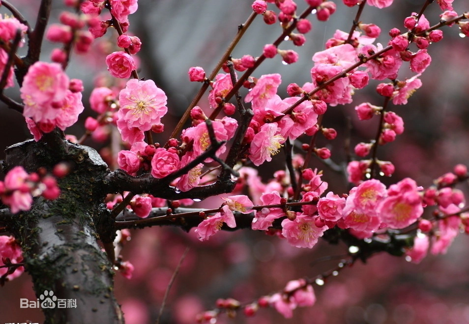

正确答案是A哦，你答对了吗
观赏用梅的兴起：观赏梅花的兴起，大致始自汉初。《西京杂记》载：“汉初修上林苑，远方各献名果异树，有朱梅，姻脂梅。”这时的梅花品种，当系既观花又结实的兼用品种，恐属江梅、官粉两型。西汉末年扬雄作《蜀都赋》云：“被以樱、梅，树以木兰。”可见约在2000年前，梅已作为园林树木用于城市绿化了。
小故事：梅原产中国南方，已有三千多年的栽培历史，无论作观赏或果树均有许多品种。许多类型不但露地栽培供观赏，还可以栽为盆花，制作梅桩。鲜花可提取香精，花、叶、根和种仁均可入药。果实可食、盐渍或干制，或熏制成乌梅入药，有止咳、止泻、生津、止渴之效。梅又能抗根线虫危害，可作核果类果树的砧木。梅花是中国十大名花之首，与兰花、竹子、菊花一起列为四君子，与松、竹并称为“岁寒三友”。在中国传统文化中，梅以它的高洁、坚强、谦虚的品格，给人以立志奋发的激励。在严寒中，梅开百花之先，独天下而春。
环科类2107-2022.3.10-T4
powered by ZH☆